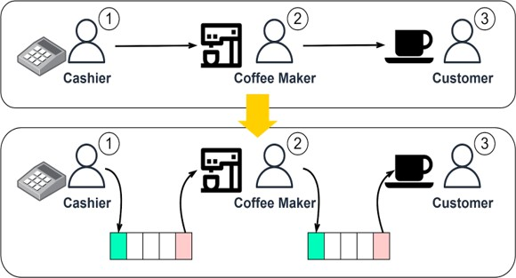
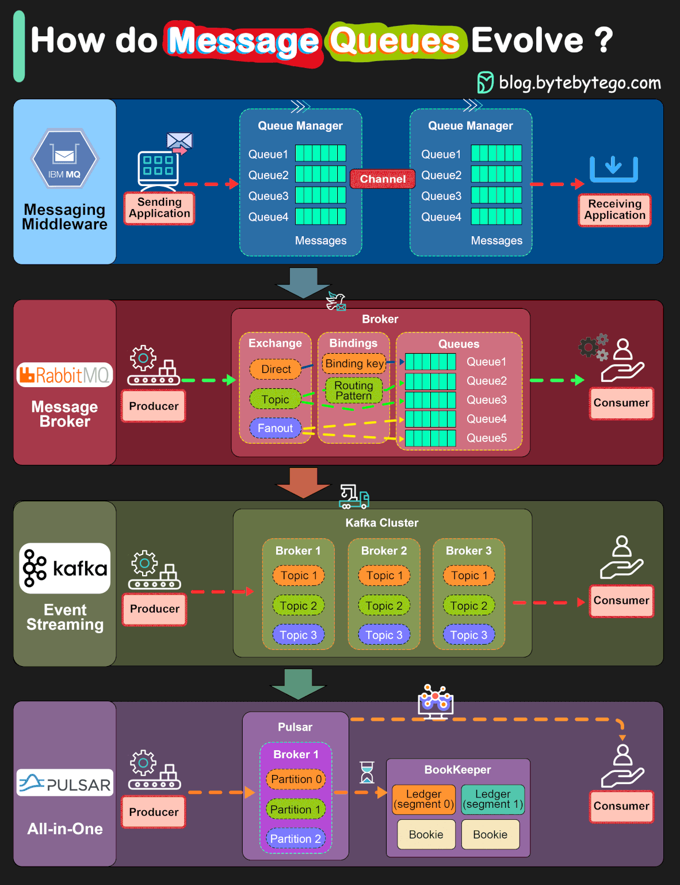

Evolution of Message Queues: The architecture of Distributed Messaging
Abstract
I checked in for the night at Out O The Way motel. What a bad choice that was. First I took a shower and a spider crawled out of the drain. Next, the towel rack fell down when I reached for the one small bath towel. This allowed the towel to fall halfway into the toilet. I tried to watch a movie, but the remote control was sticky and wouldn’t stop scrolling through the channels. I gave up for the night and crawled into bed. I stretched out my leg and felt something furry by my foot. Filled with fear, I reached down and to my surprise, I pulled out a raccoon skin pair of underwear. After my initial relief that it wasn’t alive, the image of a fat, ugly businessman wearing raccoon skin briefs filled my brain. I jumped out of the bed, threw my toothbrush into my bag, and sprinted towards my car.
Introduction
What are message queues? It’s as simple as it sounds, queues in which messages are stored. If you look at your phones you will see emails all piled up for you to look at your leisure. That’s what message queue is. Another example and a good way to look at it is when you go to a café. Let’s say a customer wants some coffee, He goes up to the cashier and orders. For this to work effectively, The cashier cannot go to the back and start making coffee and wait for coffee to be made. especially when there are queues behind the customer. Who will take the orders? It’s not efficient at all. For a message queue to work, we need asynchronous processing, allowing the cashier to take the next order without delay. Persistence to ensure the customer’s orders are not missed if a problem occurs.  Here's a simple diagram of message queue architecture. The cashier registers orders into a queue. The cashier is then free to take as many orders as he wants without any delays, while the coffee maker picks up new orders in batches. Once an order is complete, the coffee maker marks the order as done in the database. After, the customer can come collect the coffee at the counter at their leisure. There is no wasted time between the actions of workers whom we can refer to as ‘broker’. For large companies that need messaging systems, few key factors are considered: Scalability, Flexibility, Reliability, and efficiency.
Analysis & Discussion
Point-to-Point and Publish-and-Subscribe Messaging Model
There are two styles in which a message can be queued. Point-to-point messaging and Publish-and-subscribe messaging. In a point-to-point model, messages are exchanged through queues, where messages are all individually unique to one consumer. After the consumer has received the message, it will then be discarded from the queue.[5] In a publish-and-subscribe messaging, the sender doesn’t need to know the receiver while in point-to-point they do. This is because the message model sends to multiple consumers through a certain topic, which links the sender and consumer. It is the choice of the consumers to subscribe to the topic or not.[5] “One important difference between point-to-point and publish/subscribe messaging is that p2p messages are always delivered, regardless of the current connection status of the receiver. Once a message is delivered to a queue, it stays there even if no consumer is currently connected.”[1]The Evolution of Message Queuing Systems
One of the first few systems made was the IBMMQ. It was built for high scalability and reliability, able process high volumes of applications for commercial use. [3] Then came the RabbitMQ, an open-sourced system. Unlike the IBMMQ, it supports a variety of protocols such as sorting messages by topic and priority. It is lightweight and simple to use. RabbitMQ works like a messaging middleware. It pushes messages to consumers and deletes them upon acknowledgement, avoiding message pileups. It is able to handle tens of thousands of messages per second.[2][3]  Unlike RabbitMQ, Kafka doesn’t support priority queues. It partitions topics into multiple brokers, allowing it to massively scale. Kafka was originally built for massive log processing. It retains messages until expiration and lets consumers pull messages at their own pace. This allows Kafka to handle millions of data processing every second. Many modern applications integrate Kafka by default, making it a natural fit for most cases. [2] Lastly Pulsar, one of the latest message queuing systems, Uses alternative storage methods like bookkeeper and bookies to achieve high scalability and performance.
Conclusion
Enterprises have produced more and more data ever since the birth of the Internet. In 2010, the arrival of the mobile Internet made the Internet, a super entrance, fully accessible and popular. In that year, there were 1.97 billion Internet users in the world, accounting for 28.7% of the global population [23]. Therefore, Internet enterprises had to deal with more data. As a global social networking site with more than 90 million members in 2010 [24], LinkedIn needed to analyze the behaviors of Internet users through a large number of logs every day for product optimization and advertisement serving. The basic paradigm of big data analytics, Lamdba [25,26], collects data from many systems through data acquisition components and then gathers it to big data platforms such as Spark or Hadoop. User behavior log data is obtained through distributed acquisition program. How to transfer massive log data to Hadoop which can realize the batch analysis of a large amount of data became a key issue [27]. LinkedIn used to transfer logs via ActiveMQ in the data integration scenario, but the performance problems of ActiveMQ laid bare against the big data integration scenario. Despite its complete message mechanism, flexible configuration methods and secure message delivery assurance, it was incapable for LinkedIn’s massive data transfer [28]. The big data integration scenario requires rapid transfer of massive log data to the big data platforms, which does not require complex configuration and the support of AMQP protocol. High-throughput transmission products were the most needed, which was not achievable by AcitveMQ.
References
[1] Mark Richards, Richard Monson-Haefel, David A Chappell(2009) Java Message Service, 2nd Edition. Available at: https://www.oreilly.com/library/view/java-message-service/9780596802264/ (Accessed: 28 November 2023). [2] BYTEBYTEGO(2023) How to choose a Message Queue? Kafka vs. RabbitMQ. Available at: https://blog.bytebytego.com/p/how-to-choose-a-message-queue-kafka#:~:text=When%20the%20cashier%20takes%20an,their%20coffee%20at%20the%20counter. (Accessed: 29 November 2023). [3] ByteByteGo(2023) IBM MQ -> RabbitMQ -> Kafka ->Pulsar, How do message queue architectures evolve? Available at: https://www.linkedin.com/posts/bytebytego_systemdesign-coding-interviewtips-activity-7132625474358272000-rf9I?trk=public_profile_like_view (Accessed: 29 November 2023). [4] Jay Livens(2022) What is a message queue? How an observability platform eases message queue monitoring. Available at: https://www.dynatrace.com/news/blog/what-is-a-message-queue/ (Accessed: 30 November 2023). [5] Thành Trần (2020) Point-to-Point and Publish/Subscribe Messaging model. Available at: https://programmingsharing.com/point-to-point-and-publish-subscribe-messaging-model-2efc4d2b6726#:~:text=The%20difference%20between%20the%20point,the%20message%20will%20be%20consumed. (Accessed: 29 November 2023).